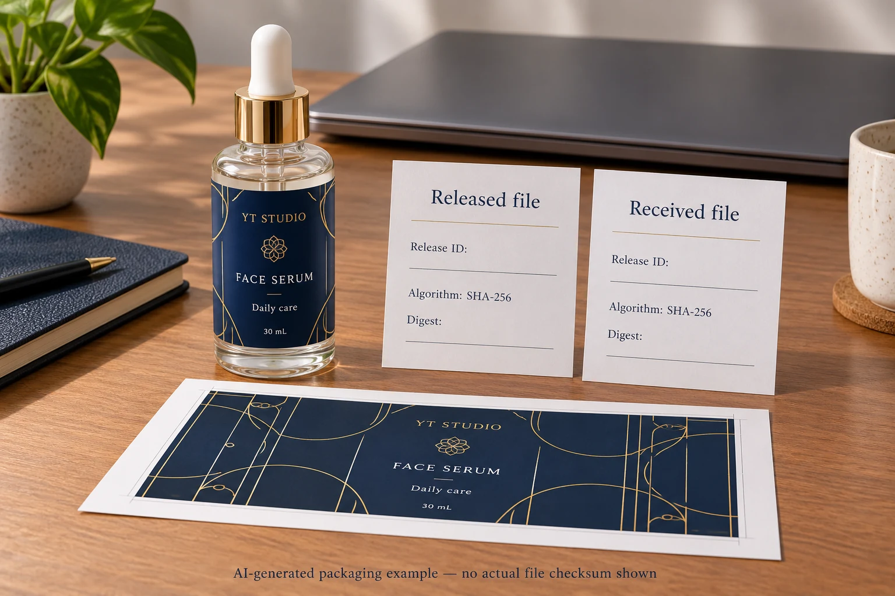
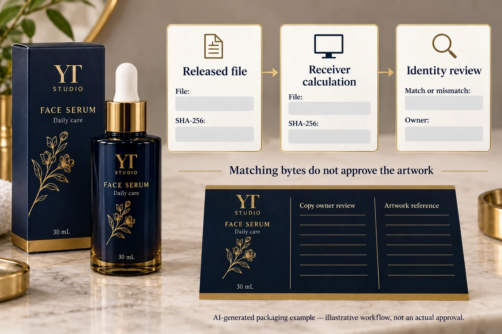

The artwork is approved. A file with the expected name arrives at prepress. That still leaves a narrow question: are these the exact bytes that the authorised reviewer released, or a different export with the same name?
Record a SHA-256 checksum for the final released file and compare it with the checksum calculated independently from the received copy. Matching checksums provide strong evidence of byte-for-byte identity. They do not establish that the artwork is correct, that the sender is authorised or that the printer can produce it. Keep those approvals attached to the release record.

Give the release a stable identity
Start with a specific file, its intended job, version and release owner. Record what was approved: the production PDF, an associated technical file, or a defined package of files. A comment saying approved artwork can be ambiguous when a folder contains a composite preview, a varnish mask and several exports.
The artwork revision guide handles the broader change and approval record. The checksum step addresses a smaller handoff risk after that decision: whether the acknowledged received file is the same binary object. A checksum cannot replace the designer's comparison of changed copy or the brand's acceptance of that copy.
Use one release identifier that both parties can recognise. Retain the original approved file. If a later operation creates another file, preserve the relationship rather than quietly treating the output as the same release. Clear lineage is more useful than trying to make several different exports share one reassuring filename.
Calculate from the file, not the label on the email
Microsoft's Get-FileHash documentation explains that file content determines the hash and that SHA-256 is its default algorithm. For a Windows-based reviewer, a command can calculate it from an exact local file. The receiving party can use its own suitable SHA-256 tool on the actual received file.
For example, Get-FileHash -LiteralPath 'C:\LabelRelease\approved-label.pdf' -Algorithm SHA256 produces the digest for that file. This is a workflow example, not a real customer path or digest. Record the algorithm explicitly so both parties compare the same kind of result.
A filename change alone does not change the file content or its SHA-256 digest. A new PDF export can change its bytes even if the visible artwork appears identical. Embedded metadata, objects or other internal changes can matter. Therefore a mismatch says the copies differ; it does not, by itself, say which visible text changed or whether someone acted improperly.
Do not paste an invented example checksum into a real release record. Calculate it from the file under review and keep the complete result. A short fragment can help locate a record, but compare the full value for the handoff decision.
Have the receiver calculate independently
The sender records the released file's name, release identifier, algorithm, full digest and approving reference. The receiver downloads or obtains the file, calculates its own digest and acknowledges that result through the agreed communication route. Copying the sender's digest into a reply without calculating it does not establish the received file's identity.
Record which file was checked and when. If the recipient checks a preview PDF while production uses a separate PDF, the evidence answers the wrong question. Ask prepress to identify the file actually entering its workflow and any further processing that will create a new output.
Keep the release record in a controlled, agreed channel. A matching digest sent alongside a substituted file in an untrusted message is not proof of an authorised release. This practical comparison addresses accidental file confusion; it is not a complete security or digital-signature system.
Use a file-identity handoff table
| Record field | Sender's entry | Receiver's action |
|---|---|---|
| Job and release | Named product/version and approval reference | Confirm the intended production job |
| Exact deliverable | Production file and any linked technical deliverables | Identify the file actually received |
| Algorithm | SHA-256 | Calculate with the same algorithm |
| Full digest | Value calculated from the released file | Compare the independently calculated full value |
| Receipt | Named recipient and acknowledgement route | Record match or mismatch and time |
| Further processing | Whether conversion or another export is planned | Identify the new output and approval route |
| Release decision | Authorised owner and conditions | Hold or proceed only within that approval scope |

Fill the job and deliverable fields first. Calculate and record the sender's digest from the retained approved file. Obtain the receiver's independent calculation. If the values match, document that identity check alongside the existing content and production approvals. It is evidence for one gate, not every gate.
If the values differ, stop the identity-based release. Retrieve both files and identify the cause with the responsible people. It may be the wrong attachment, a different export or an expected transformation that was not recorded. Do not approve simply because both files display the same cover image.
Treat prepress transformations as new outputs
Consider two hypothetical handoffs. In the first, the receiver renames the downloaded PDF to fit its job system. The bytes remain unchanged, so a matching digest can still establish identity. In the second, prepress makes an agreed conversion and saves a new PDF. That output should receive its own identity and the review required for the transformation.
The second route is not automatically an error. It needs a record connecting input, operation, output and acceptance. The colour-profile handoff guide explains one conversion decision that should be settled explicitly. A hash mismatch is a signal to reconcile the workflow, not a diagnosis of colour quality.
For packages with several production files, list each required deliverable and its identity. Hashing an archive establishes the archive's bytes; do not assume it independently documents which individual files were reviewed. Keep the manifest and the approval scope readable by the people receiving the job.
For custom cosmetic labels, provide the container, dimensions, quantities per design and release reference. Ask the receiving printer how it acknowledges the exact production file and how changed prepress outputs are reviewed. This guide does not imply that a checksum service is already included in every quotation.
Use the inquiry form to prepare a message. Send the artwork and release record separately by email or WhatsApp; the form does not upload attachments. Keep the final acknowledgement attached to the exact file the parties agreed to use.
Source: Microsoft Get-FileHash documentation. Hashes establish content identity within the stated workflow; they do not grant design approval or authenticate a sender.